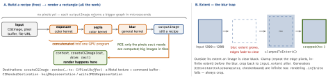

ios-platform · folio
In one line: A CIImage is a recipe, not pixels: applying a CIFilter only extends a
lazy graph. Nothing is computed until a CIContext renders a rectangle of it — then
Core Image walks the graph backwards from that rectangle (region of interest),
concatenates adjacent kernels into as few GPU (Metal) passes as it can, and writes the result
to a CGImage, pixel buffer, texture or file. Contexts are expensive — make one and reuse
it; contexts and images are immutable and thread-safe, filters are mutable and are not.
Download PDF Print view LaTeX source


How it works
- Inputs:
CIImage(cgImage:),(cvPixelBuffer:)(camera frames, no copy),(image:)fromUIImage— which dropsimageOrientation: apply.oriented(_:). Origin is bottom-left, like Quartz. - Two filter APIs: stringly
CIFilter(name: "CIGaussianBlur")+setValue(_:forKey: kCIInputImageKey)(typos = runtimenil), or typedimport CoreImage.CIFilterBuiltins(iOS 13) →CIFilter.gaussianBlur()withinputImage/radiusproperties. - Lazy + concatenated: chains of per-pixel (colour) kernels fuse into one program — no intermediate texture per step; a blur or warp needs neighbours, so it may force one.
- CIContext owns an
MTLCommandQueue, the compiled-kernel cache and intermediate buffers. Apple: one per view that renders, or per background task — never per image or per frame.CIContext(mtlDevice:)/(mtlCommandQueue:)shares your Metal pipeline;.useSoftwareRenderer: trueforces the (slow) CPU path. - Colour: inputs are converted into the working space — default extended sRGB, linear gamma, so maths happens in linear light and values beyond 0–1 survive; output converts to the destination’s space. Masks, depth, data:
.workingColorSpace: NSNull()turns colour management off. - Custom kernels are Metal (MSL):
CIColorKernel(one pixel in, one out),CIWarpKernel(returns the source coordinate),CIBlendKernel, generalCIKernel(samplers + an ROI callback). Build: Other Metal Compiler Flags-fcikernel, user settingMTLLINKER_FLAGS = -cikernel. String kernels (CIKernel(source:)) are deprecated since iOS 12. MPS or a model inside the graph:CIImageProcessorKernel. - Vision hand-off: the same
CIImagefeedsVNImageRequestHandler(ciImage:orientation:); results are normalised (0–1), bottom-left origin — convert withVNImageRectForNormalizedRect, then e.g. pixellate only the face rect and composite it back.
Example — one shared context, typed filters
import CoreImage.CIFilterBuiltins
let context = CIContext() // ONE, app-wide or per view
func stylise(_ cg: CGImage) -> CGImage? {
let input = CIImage(cgImage: cg)
let blur = CIFilter.gaussianBlur() // typed API, iOS 13
blur.inputImage = input.clampedToExtent() // no fading edges
blur.radius = 8
let tone = CIFilter.sepiaTone() // filters: NOT thread-safe
tone.inputImage = blur.outputImage; tone.intensity = 0.6
guard let out = tone.outputImage?.cropped(to: input.extent)
else { return nil } // still only a recipe
return context.createCGImage(out, from: out.extent) // GPU work: HERE
}Custom colour kernel (MSL) + applying it
#include <CoreImage/CoreImage.h> // Threshold.ci.metal
extern "C" float4 threshold(coreimage::sample_t s, float t) {
float l = dot(s.rgb, float3(0.2126, 0.7152, 0.0722)); // luma
return float4(float3(step(t, l)), s.a); // black or white
} // Swift side:
let k = try CIColorKernel(functionName: "threshold",
fromMetalLibraryData: metallibData)
let bw = k.apply(extent: img.extent, arguments: [img, 0.5])Live camera — stay on the GPU
AVCaptureVideoDataOutput → CVPixelBuffer → CIImage(cvPixelBuffer:) → filters → context.render into the MTKView drawable’s texture (or a CIRenderDestination) — never createCGImage per frame: that is a GPU→CPU readback plus an allocation, 30–60 times a second.
Which tool for an image effect?
| Core Image | built-ins, graph optimisation, photo + video, RAW |
| SwiftUI shader | one view’s pixels (.colorEffect / .layerEffect, iOS 17) |
| Metal | full control: your own passes, compute, 3D, ML |
| Core Graphics | drawing shapes and text, not filtering pixels |
Traps
- A new
CIContextper image or per frame — kernel recompiles, memory spikes, stutter. UIImage(ciImage:)in aUIImageView: still a recipe, rendered on every draw by a context you do not control. Render to aCGImagewith your shared context.- Soft transparent borders after a blur, or
createCGImage(out, from: out.extent)isnil(infinite extent) — clamp, then crop. - Rotated photo —
CIImage(image:)drops the orientation. - One
CIFiltershared between threads — a data race; share images and the context instead. - Face box drawn in the wrong place — Vision is normalised and bottom-left, UIKit top-left.